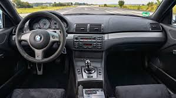
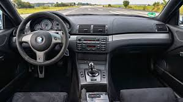

BMW E46
The fourth-generation 3 Series (1998 - 2006)

 

Car Specifications
- Engine Options: 1.8L Inline-4, 2.0L Inline-4, 2.2L Inline-6, 2.5L Inline-6, 3.0L Inline-6, 3.2L Inline-6 (M3)
- Power: 115 - 343 hp
- Torque: 175 - 365 Nm
- Transmission: 5-speed manual, 6-speed manual, 5-speed automatic
- Top Speed: 250 km/h (155 mph)
- 0-100 km/h: 5.2 seconds (M3)
- Fuel Economy: 7.0 - 13.0 L/100 km (40 - 18 mpg)
- Production Years: 1998 - 2006
- Body Style: 2-door Coupe, 4-door Sedan, Convertible, Touring (Wagon), Compact
- Drive Type: Rear-Wheel Drive, All-Wheel Drive (xi models)
- Weight: 1,400 - 1,600 kg
About the BMW E46
The BMW E46 is widely regarded as one of the most balanced and versatile models in the 3 Series lineup. With its elegant design, precise handling, and advanced technology, the E46 set a benchmark for its class.
From the practical sedan to the high-performance M3, the E46 offered a model for every driver, making it a favorite among enthusiasts and daily drivers alike.
Image Gallery


Key Features
- Performance: A wide range of engines, including the iconic M3.
- Design: Timeless styling with modern touches and aerodynamic efficiency.
- Technology: Advanced features like DSC (Dynamic Stability Control) and modern infotainment options.
Technical Information
The BMW E46 offered a broad selection of engines and trims to suit various driving needs:
Engine Codes and Iterations
- M43: 1.8L Inline-4, used in 316i
- M54: 2.2L-3.0L Inline-6, used in 320i, 325i, 330i
- S54: 3.2L Inline-6, up to 343 hp, used in the M3
Conclusion
The BMW E46 continues to be celebrated as a pinnacle of 3 Series evolution, combining luxury, performance, and reliability. Its legacy lives on as a sought-after model in the used car market and among collectors.